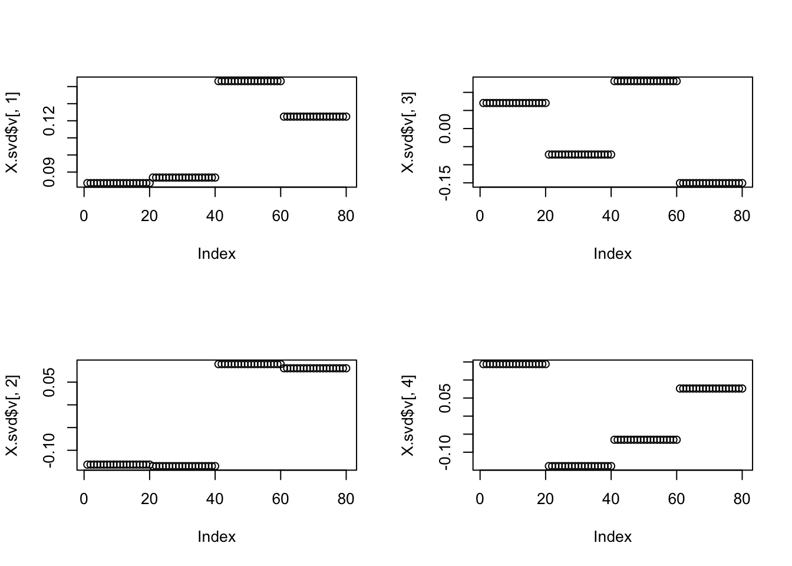
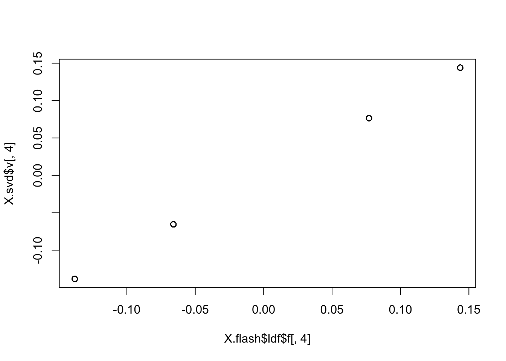
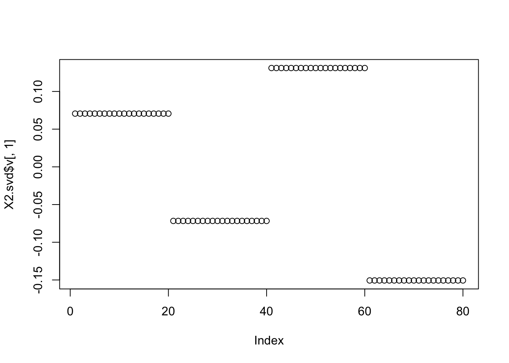

tree_pca_03
Matthew Stephens
2020-08-08
Last updated: 2020-08-12
Checks: 7 0
Knit directory: misc/analysis/
This reproducible R Markdown analysis was created with workflowr (version 1.6.2). The Checks tab describes the reproducibility checks that were applied when the results were created. The Past versions tab lists the development history.
Great! Since the R Markdown file has been committed to the Git repository, you know the exact version of the code that produced these results.
Great job! The global environment was empty. Objects defined in the global environment can affect the analysis in your R Markdown file in unknown ways. For reproduciblity it’s best to always run the code in an empty environment.
The command set.seed(1) was run prior to running the code in the R Markdown file. Setting a seed ensures that any results that rely on randomness, e.g. subsampling or permutations, are reproducible.
Great job! Recording the operating system, R version, and package versions is critical for reproducibility.
Nice! There were no cached chunks for this analysis, so you can be confident that you successfully produced the results during this run.
Great job! Using relative paths to the files within your workflowr project makes it easier to run your code on other machines.
Great! You are using Git for version control. Tracking code development and connecting the code version to the results is critical for reproducibility.
The results in this page were generated with repository version 006a885. See the Past versions tab to see a history of the changes made to the R Markdown and HTML files.
Note that you need to be careful to ensure that all relevant files for the analysis have been committed to Git prior to generating the results (you can use wflow_publish or wflow_git_commit). workflowr only checks the R Markdown file, but you know if there are other scripts or data files that it depends on. Below is the status of the Git repository when the results were generated:
Ignored files:
Ignored: .DS_Store
Ignored: .Rhistory
Ignored: .Rproj.user/
Ignored: analysis/.RData
Ignored: analysis/.Rhistory
Ignored: analysis/ALStruct_cache/
Ignored: data/.Rhistory
Ignored: data/pbmc/
Untracked files:
Untracked: .dropbox
Untracked: Icon
Untracked: analysis/GHstan.Rmd
Untracked: analysis/GTEX-cogaps.Rmd
Untracked: analysis/PACS.Rmd
Untracked: analysis/Rplot.png
Untracked: analysis/SPCAvRP.rmd
Untracked: analysis/admm_02.Rmd
Untracked: analysis/admm_03.Rmd
Untracked: analysis/compare-transformed-models.Rmd
Untracked: analysis/cormotif.Rmd
Untracked: analysis/cp_ash.Rmd
Untracked: analysis/eQTL.perm.rand.pdf
Untracked: analysis/eb_prepilot.Rmd
Untracked: analysis/eb_var.Rmd
Untracked: analysis/ebpmf1.Rmd
Untracked: analysis/flash_test_tree.Rmd
Untracked: analysis/flash_tree.Rmd
Untracked: analysis/ieQTL.perm.rand.pdf
Untracked: analysis/lasso_em_03.Rmd
Untracked: analysis/m6amash.Rmd
Untracked: analysis/mash_bhat_z.Rmd
Untracked: analysis/mash_ieqtl_permutations.Rmd
Untracked: analysis/mixsqp.Rmd
Untracked: analysis/mr.ash_lasso_init.Rmd
Untracked: analysis/mr.mash.test.Rmd
Untracked: analysis/mr_ash_modular.Rmd
Untracked: analysis/mr_ash_parameterization.Rmd
Untracked: analysis/mr_ash_pen.Rmd
Untracked: analysis/mr_ash_ridge.Rmd
Untracked: analysis/nejm.Rmd
Untracked: analysis/normalize.Rmd
Untracked: analysis/pbmc.Rmd
Untracked: analysis/poisson_transform.Rmd
Untracked: analysis/pseudodata.Rmd
Untracked: analysis/qrnotes.txt
Untracked: analysis/ridge_iterative_02.Rmd
Untracked: analysis/ridge_iterative_splitting.Rmd
Untracked: analysis/samps/
Untracked: analysis/sc_bimodal.Rmd
Untracked: analysis/shrinkage_comparisons_changepoints.Rmd
Untracked: analysis/susie_en.Rmd
Untracked: analysis/susie_z_investigate.Rmd
Untracked: analysis/svd-timing.Rmd
Untracked: analysis/temp.RDS
Untracked: analysis/temp.Rmd
Untracked: analysis/test-figure/
Untracked: analysis/test.Rmd
Untracked: analysis/test.Rpres
Untracked: analysis/test.md
Untracked: analysis/test_qr.R
Untracked: analysis/test_sparse.Rmd
Untracked: analysis/z.txt
Untracked: code/multivariate_testfuncs.R
Untracked: code/rqb.hacked.R
Untracked: data/4matthew/
Untracked: data/4matthew2/
Untracked: data/E-MTAB-2805.processed.1/
Untracked: data/ENSG00000156738.Sim_Y2.RDS
Untracked: data/GDS5363_full.soft.gz
Untracked: data/GSE41265_allGenesTPM.txt
Untracked: data/Muscle_Skeletal.ACTN3.pm1Mb.RDS
Untracked: data/Thyroid.FMO2.pm1Mb.RDS
Untracked: data/bmass.HaemgenRBC2016.MAF01.Vs2.MergedDataSources.200kRanSubset.ChrBPMAFMarkerZScores.vs1.txt.gz
Untracked: data/bmass.HaemgenRBC2016.Vs2.NewSNPs.ZScores.hclust.vs1.txt
Untracked: data/bmass.HaemgenRBC2016.Vs2.PreviousSNPs.ZScores.hclust.vs1.txt
Untracked: data/eb_prepilot/
Untracked: data/finemap_data/fmo2.sim/b.txt
Untracked: data/finemap_data/fmo2.sim/dap_out.txt
Untracked: data/finemap_data/fmo2.sim/dap_out2.txt
Untracked: data/finemap_data/fmo2.sim/dap_out2_snp.txt
Untracked: data/finemap_data/fmo2.sim/dap_out_snp.txt
Untracked: data/finemap_data/fmo2.sim/data
Untracked: data/finemap_data/fmo2.sim/fmo2.sim.config
Untracked: data/finemap_data/fmo2.sim/fmo2.sim.k
Untracked: data/finemap_data/fmo2.sim/fmo2.sim.k4.config
Untracked: data/finemap_data/fmo2.sim/fmo2.sim.k4.snp
Untracked: data/finemap_data/fmo2.sim/fmo2.sim.ld
Untracked: data/finemap_data/fmo2.sim/fmo2.sim.snp
Untracked: data/finemap_data/fmo2.sim/fmo2.sim.z
Untracked: data/finemap_data/fmo2.sim/pos.txt
Untracked: data/logm.csv
Untracked: data/m.cd.RDS
Untracked: data/m.cdu.old.RDS
Untracked: data/m.new.cd.RDS
Untracked: data/m.old.cd.RDS
Untracked: data/mainbib.bib.old
Untracked: data/mat.csv
Untracked: data/mat.txt
Untracked: data/mat_new.csv
Untracked: data/matrix_lik.rds
Untracked: data/paintor_data/
Untracked: data/temp.txt
Untracked: data/y.txt
Untracked: data/y_f.txt
Untracked: data/zscore_jointLCLs_m6AQTLs_susie_eQTLpruned.rds
Untracked: data/zscore_jointLCLs_random.rds
Untracked: explore_udi.R
Untracked: output/fit.k10.rds
Untracked: output/fit.varbvs.RDS
Untracked: output/glmnet.fit.RDS
Untracked: output/test.bv.txt
Untracked: output/test.gamma.txt
Untracked: output/test.hyp.txt
Untracked: output/test.log.txt
Untracked: output/test.param.txt
Untracked: output/test2.bv.txt
Untracked: output/test2.gamma.txt
Untracked: output/test2.hyp.txt
Untracked: output/test2.log.txt
Untracked: output/test2.param.txt
Untracked: output/test3.bv.txt
Untracked: output/test3.gamma.txt
Untracked: output/test3.hyp.txt
Untracked: output/test3.log.txt
Untracked: output/test3.param.txt
Untracked: output/test4.bv.txt
Untracked: output/test4.gamma.txt
Untracked: output/test4.hyp.txt
Untracked: output/test4.log.txt
Untracked: output/test4.param.txt
Untracked: output/test5.bv.txt
Untracked: output/test5.gamma.txt
Untracked: output/test5.hyp.txt
Untracked: output/test5.log.txt
Untracked: output/test5.param.txt
Unstaged changes:
Modified: analysis/ash_delta_operator.Rmd
Modified: analysis/ash_pois_bcell.Rmd
Modified: analysis/lasso_em.Rmd
Modified: analysis/minque.Rmd
Modified: analysis/mr_missing_data.Rmd
Modified: analysis/ridge_admm.Rmd
Note that any generated files, e.g. HTML, png, CSS, etc., are not included in this status report because it is ok for generated content to have uncommitted changes.
These are the previous versions of the repository in which changes were made to the R Markdown (analysis/tree_pca_03.Rmd) and HTML (docs/tree_pca_03.html) files. If you’ve configured a remote Git repository (see ?wflow_git_remote), click on the hyperlinks in the table below to view the files as they were in that past version.
| File | Version | Author | Date | Message |
|---|---|---|---|---|
| Rmd | 006a885 | Matthew Stephens | 2020-08-12 | workflowr::wflow_publish(“tree_pca_03.Rmd”) |
| html | 159d030 | Matthew Stephens | 2020-08-10 | Build site. |
| Rmd | ce4859d | Matthew Stephens | 2020-08-10 | workflowr::wflow_publish(“tree_pca_03.Rmd”) |
| html | d0c86e8 | Matthew Stephens | 2020-08-10 | Build site. |
| Rmd | 7f008b7 | Matthew Stephens | 2020-08-10 | workflowr::wflow_publish(“tree_pca_03.Rmd”) |
library(flashr)
library(flashier)Registered S3 method overwritten by 'flashier':
method from
print.flash flashr
Attaching package: 'flashier'The following object is masked from 'package:flashr':
flashlibrary(magrittr)
library(sparsepca)
library(EbayesThresh)Introduction
The idea here is to look at behaviour of sparse PCA algorithms on a simple tree.
It is a tree with four tips and equal branch lengths. (Also no noise for now.)
set.seed(123)
p = 1000
n = 20
f = list()
for(i in 1:6){
f[[i]] = rnorm(p)
}
X =matrix(0,ncol=4*n, nrow=p)
X[,1:(2*n)] = f[[1]]
X[,(2*n+1):(4*n)] = f[[2]]
X[,1:n] = X[,1:n]+f[[3]]
X[,(n+1):(2*n)] = X[,(n+1):(2*n)]+f[[4]]
X[,(2*n+1):(3*n)] = X[,(2*n+1):(3*n)] + f[[5]]
X[,(3*n+1):(4*n)] = X[,(3*n+1):(4*n)] + f[[6]]
image(cor(X))
| Version | Author | Date |
|---|---|---|
| d0c86e8 | Matthew Stephens | 2020-08-10 |
Regular SVD
Regular SVD does not reproduce the tree here. Indeed we should not expect it to, because the third and fourth eigenvectors have very similar eigenvalues which makes them non-identifiable without sparsity:
X.svd = svd(X)
X.svd$d[1:4][1] 255.5150 237.0327 140.2663 134.5016par(mfcol=c(2,2))
plot(X.svd$v[,1])
plot(X.svd$v[,2])
plot(X.svd$v[,3])
plot(X.svd$v[,4])
| Version | Author | Date |
|---|---|---|
| d0c86e8 | Matthew Stephens | 2020-08-10 |
sparse PCA in sparsepca package
Try sparse PCA with default settings. It does pretty well. Maybe not as sparse as one would like.
X.spca = spca(X,10)[1] "Iteration: 1, Objective: 3.50720e+02, Relative improvement Inf"
[1] "Iteration: 11, Objective: 3.48231e+02, Relative improvement 6.06872e-04"
[1] "Iteration: 21, Objective: 3.46219e+02, Relative improvement 5.12042e-04"
[1] "Iteration: 31, Objective: 3.44437e+02, Relative improvement 5.19981e-04"
[1] "Iteration: 41, Objective: 3.42754e+02, Relative improvement 4.89517e-04"
[1] "Iteration: 51, Objective: 3.41072e+02, Relative improvement 4.95160e-04"
[1] "Iteration: 61, Objective: 3.39374e+02, Relative improvement 5.02866e-04"
[1] "Iteration: 71, Objective: 3.37657e+02, Relative improvement 5.10738e-04"
[1] "Iteration: 81, Objective: 3.35927e+02, Relative improvement 5.16759e-04"
[1] "Iteration: 91, Objective: 3.34181e+02, Relative improvement 5.24954e-04"
[1] "Iteration: 101, Objective: 3.32420e+02, Relative improvement 5.31325e-04"
[1] "Iteration: 111, Objective: 3.30657e+02, Relative improvement 5.02626e-04"
[1] "Iteration: 121, Objective: 3.29017e+02, Relative improvement 5.00601e-04"
[1] "Iteration: 131, Objective: 3.27360e+02, Relative improvement 5.08424e-04"
[1] "Iteration: 141, Objective: 3.25828e+02, Relative improvement 4.20379e-04"
[1] "Iteration: 151, Objective: 3.24450e+02, Relative improvement 4.26393e-04"
[1] "Iteration: 161, Objective: 3.23059e+02, Relative improvement 4.32524e-04"
[1] "Iteration: 171, Objective: 3.21660e+02, Relative improvement 4.36754e-04"
[1] "Iteration: 181, Objective: 3.20247e+02, Relative improvement 4.43118e-04"
[1] "Iteration: 191, Objective: 3.18820e+02, Relative improvement 4.49609e-04"
[1] "Iteration: 201, Objective: 3.17379e+02, Relative improvement 4.56229e-04"
[1] "Iteration: 211, Objective: 3.15923e+02, Relative improvement 4.62982e-04"
[1] "Iteration: 221, Objective: 3.14452e+02, Relative improvement 4.69870e-04"
[1] "Iteration: 231, Objective: 3.12966e+02, Relative improvement 4.76895e-04"
[1] "Iteration: 241, Objective: 3.11465e+02, Relative improvement 4.84061e-04"
[1] "Iteration: 251, Objective: 3.09949e+02, Relative improvement 4.91370e-04"
[1] "Iteration: 261, Objective: 3.08418e+02, Relative improvement 4.98825e-04"
[1] "Iteration: 271, Objective: 3.06872e+02, Relative improvement 5.04296e-04"
[1] "Iteration: 281, Objective: 3.05316e+02, Relative improvement 5.12032e-04"
[1] "Iteration: 291, Objective: 3.03744e+02, Relative improvement 5.19922e-04"
[1] "Iteration: 301, Objective: 3.02160e+02, Relative improvement 5.25784e-04"
[1] "Iteration: 311, Objective: 3.00563e+02, Relative improvement 5.33977e-04"
[1] "Iteration: 321, Objective: 2.98949e+02, Relative improvement 5.42333e-04"
[1] "Iteration: 331, Objective: 2.97319e+02, Relative improvement 5.50857e-04"
[1] "Iteration: 341, Objective: 2.95672e+02, Relative improvement 5.59550e-04"
[1] "Iteration: 351, Objective: 2.94008e+02, Relative improvement 5.68418e-04"
[1] "Iteration: 361, Objective: 2.92328e+02, Relative improvement 5.77463e-04"
[1] "Iteration: 371, Objective: 2.90632e+02, Relative improvement 5.84455e-04"
[1] "Iteration: 381, Objective: 2.88924e+02, Relative improvement 5.93843e-04"
[1] "Iteration: 391, Objective: 2.87199e+02, Relative improvement 6.03420e-04"
[1] "Iteration: 401, Objective: 2.85456e+02, Relative improvement 6.13190e-04"
[1] "Iteration: 411, Objective: 2.84112e+02, Relative improvement 3.47491e-04"
[1] "Iteration: 421, Objective: 2.83224e+02, Relative improvement 3.14645e-04"
[1] "Iteration: 431, Objective: 2.82403e+02, Relative improvement 2.35151e-04"
[1] "Iteration: 441, Objective: 2.81736e+02, Relative improvement 2.37779e-04"
[1] "Iteration: 451, Objective: 2.81062e+02, Relative improvement 2.40701e-04"
[1] "Iteration: 461, Objective: 2.80382e+02, Relative improvement 2.43672e-04"
[1] "Iteration: 471, Objective: 2.79695e+02, Relative improvement 2.46696e-04"
[1] "Iteration: 481, Objective: 2.79006e+02, Relative improvement 2.47413e-04"
[1] "Iteration: 491, Objective: 2.78312e+02, Relative improvement 2.50534e-04"
[1] "Iteration: 501, Objective: 2.77614e+02, Relative improvement 2.51213e-04"
[1] "Iteration: 511, Objective: 2.76913e+02, Relative improvement 2.54437e-04"
[1] "Iteration: 521, Objective: 2.76204e+02, Relative improvement 2.57719e-04"
[1] "Iteration: 531, Objective: 2.75493e+02, Relative improvement 2.56531e-04"
[1] "Iteration: 541, Objective: 2.74889e+02, Relative improvement 1.98765e-04"
[1] "Iteration: 551, Objective: 2.74347e+02, Relative improvement 1.96491e-04"
[1] "Iteration: 561, Objective: 2.73805e+02, Relative improvement 1.99089e-04"
[1] "Iteration: 571, Objective: 2.73256e+02, Relative improvement 2.01732e-04"
[1] "Iteration: 581, Objective: 2.72702e+02, Relative improvement 2.04424e-04"
[1] "Iteration: 591, Objective: 2.72141e+02, Relative improvement 2.07165e-04"
[1] "Iteration: 601, Objective: 2.71574e+02, Relative improvement 2.07510e-04"
[1] "Iteration: 611, Objective: 2.71007e+02, Relative improvement 2.10356e-04"
[1] "Iteration: 621, Objective: 2.70434e+02, Relative improvement 2.13241e-04"
[1] "Iteration: 631, Objective: 2.69853e+02, Relative improvement 2.16178e-04"
[1] "Iteration: 641, Objective: 2.69266e+02, Relative improvement 2.19168e-04"
[1] "Iteration: 651, Objective: 2.68672e+02, Relative improvement 2.22213e-04"
[1] "Iteration: 661, Objective: 2.68071e+02, Relative improvement 2.25313e-04"
[1] "Iteration: 671, Objective: 2.67463e+02, Relative improvement 2.28468e-04"
[1] "Iteration: 681, Objective: 2.66848e+02, Relative improvement 2.31681e-04"
[1] "Iteration: 691, Objective: 2.66226e+02, Relative improvement 2.34951e-04"
[1] "Iteration: 701, Objective: 2.65597e+02, Relative improvement 2.38281e-04"
[1] "Iteration: 711, Objective: 2.64960e+02, Relative improvement 2.41670e-04"
[1] "Iteration: 721, Objective: 2.64315e+02, Relative improvement 2.45120e-04"
[1] "Iteration: 731, Objective: 2.63663e+02, Relative improvement 2.48632e-04"
[1] "Iteration: 741, Objective: 2.63003e+02, Relative improvement 2.52208e-04"
[1] "Iteration: 751, Objective: 2.62336e+02, Relative improvement 2.55847e-04"
[1] "Iteration: 761, Objective: 2.61660e+02, Relative improvement 2.59552e-04"
[1] "Iteration: 771, Objective: 2.60977e+02, Relative improvement 2.63323e-04"
[1] "Iteration: 781, Objective: 2.60285e+02, Relative improvement 2.67161e-04"
[1] "Iteration: 791, Objective: 2.59585e+02, Relative improvement 2.71068e-04"
[1] "Iteration: 801, Objective: 2.58877e+02, Relative improvement 2.75045e-04"
[1] "Iteration: 811, Objective: 2.58160e+02, Relative improvement 2.79093e-04"
[1] "Iteration: 821, Objective: 2.57435e+02, Relative improvement 2.83213e-04"
[1] "Iteration: 831, Objective: 2.56701e+02, Relative improvement 2.87406e-04"
[1] "Iteration: 841, Objective: 2.55958e+02, Relative improvement 2.91674e-04"
[1] "Iteration: 851, Objective: 2.55207e+02, Relative improvement 2.96018e-04"
[1] "Iteration: 861, Objective: 2.54447e+02, Relative improvement 3.00440e-04"
[1] "Iteration: 871, Objective: 2.53677e+02, Relative improvement 3.04939e-04"
[1] "Iteration: 881, Objective: 2.52898e+02, Relative improvement 3.09519e-04"
[1] "Iteration: 891, Objective: 2.52112e+02, Relative improvement 3.11713e-04"
[1] "Iteration: 901, Objective: 2.51321e+02, Relative improvement 3.16440e-04"
[1] "Iteration: 911, Objective: 2.50521e+02, Relative improvement 3.21256e-04"
[1] "Iteration: 921, Objective: 2.49711e+02, Relative improvement 3.26157e-04"
[1] "Iteration: 931, Objective: 2.48891e+02, Relative improvement 3.31145e-04"
[1] "Iteration: 941, Objective: 2.48061e+02, Relative improvement 3.36221e-04"
[1] "Iteration: 951, Objective: 2.47222e+02, Relative improvement 3.41387e-04"
[1] "Iteration: 961, Objective: 2.46372e+02, Relative improvement 3.46644e-04"
[1] "Iteration: 971, Objective: 2.45514e+02, Relative improvement 3.49127e-04"
[1] "Iteration: 981, Objective: 2.44735e+02, Relative improvement 2.68392e-04"
[1] "Iteration: 991, Objective: 2.44094e+02, Relative improvement 2.61922e-04"par(mfcol=c(2,2))
plot(X.spca$loadings[,1])
plot(X.spca$loadings[,2])
plot(X.spca$loadings[,3])
plot(X.spca$loadings[,4])
| Version | Author | Date |
|---|---|---|
| d0c86e8 | Matthew Stephens | 2020-08-10 |
Try increasing sparsity by increasing alpha. That lost the tree… too sparse!
X.spca = spca(X,10,alpha=0.01)[1] "Iteration: 1, Objective: 2.93409e+04, Relative improvement Inf"
[1] "Iteration: 11, Objective: 2.00661e+04, Relative improvement 1.81365e-02"
[1] "Iteration: 21, Objective: 1.77272e+04, Relative improvement 6.79263e-03"
[1] "Iteration: 31, Objective: 1.59354e+04, Relative improvement 1.43948e-02"
[1] "Iteration: 41, Objective: 1.51195e+04, Relative improvement 4.97303e-03"
[1] "Iteration: 51, Objective: 1.37303e+04, Relative improvement 1.55392e-02"
[1] "Iteration: 61, Objective: 1.29725e+04, Relative improvement 2.38115e-03"
[1] "Iteration: 71, Objective: 1.26555e+04, Relative improvement 2.55998e-03"
[1] "Iteration: 81, Objective: 1.23228e+04, Relative improvement 2.75820e-03"
[1] "Iteration: 91, Objective: 1.19739e+04, Relative improvement 2.97609e-03"
[1] "Iteration: 101, Objective: 1.16085e+04, Relative improvement 3.19317e-03"
[1] "Iteration: 111, Objective: 1.13358e+04, Relative improvement 1.32116e-03"par(mfcol=c(2,2))
plot(X.spca$loadings[,1])
plot(X.spca$loadings[,2])
plot(X.spca$loadings[,3])
plot(X.spca$loadings[,4])
| Version | Author | Date |
|---|---|---|
| d0c86e8 | Matthew Stephens | 2020-08-10 |
Try again.. .also not what I was hoping for.
X.spca = spca(X,10,alpha=0.001)[1] "Iteration: 1, Objective: 3.18733e+03, Relative improvement Inf"
[1] "Iteration: 11, Objective: 3.02096e+03, Relative improvement 5.21372e-03"
[1] "Iteration: 21, Objective: 2.89002e+03, Relative improvement 4.41432e-03"
[1] "Iteration: 31, Objective: 2.75381e+03, Relative improvement 5.18506e-03"
[1] "Iteration: 41, Objective: 2.60149e+03, Relative improvement 6.15317e-03"
[1] "Iteration: 51, Objective: 2.52474e+03, Relative improvement 2.44057e-03"
[1] "Iteration: 61, Objective: 2.46924e+03, Relative improvement 2.01406e-03"
[1] "Iteration: 71, Objective: 2.41617e+03, Relative improvement 2.33568e-03"
[1] "Iteration: 81, Objective: 2.35522e+03, Relative improvement 2.75216e-03"
[1] "Iteration: 91, Objective: 2.28529e+03, Relative improvement 3.24973e-03"
[1] "Iteration: 101, Objective: 2.21687e+03, Relative improvement 2.74952e-03"
[1] "Iteration: 111, Objective: 2.15670e+03, Relative improvement 2.61468e-03"
[1] "Iteration: 121, Objective: 2.11070e+03, Relative improvement 2.07298e-03"
[1] "Iteration: 131, Objective: 2.06407e+03, Relative improvement 2.38195e-03"
[1] "Iteration: 141, Objective: 2.01160e+03, Relative improvement 2.74547e-03"
[1] "Iteration: 151, Objective: 1.96577e+03, Relative improvement 4.98195e-04"
[1] "Iteration: 161, Objective: 1.95595e+03, Relative improvement 4.86109e-04"
[1] "Iteration: 171, Objective: 1.94621e+03, Relative improvement 5.10503e-04"
[1] "Iteration: 181, Objective: 1.93601e+03, Relative improvement 5.37983e-04"
[1] "Iteration: 191, Objective: 1.92530e+03, Relative improvement 5.68969e-04"
[1] "Iteration: 201, Objective: 1.91402e+03, Relative improvement 6.03914e-04"
[1] "Iteration: 211, Objective: 1.90210e+03, Relative improvement 6.43330e-04"
[1] "Iteration: 221, Objective: 1.88945e+03, Relative improvement 6.87782e-04"
[1] "Iteration: 231, Objective: 1.87600e+03, Relative improvement 7.37744e-04"
[1] "Iteration: 241, Objective: 1.86227e+03, Relative improvement 7.60054e-04"
[1] "Iteration: 251, Objective: 1.84755e+03, Relative improvement 8.22672e-04"
[1] "Iteration: 261, Objective: 1.83230e+03, Relative improvement 8.56512e-04"
[1] "Iteration: 271, Objective: 1.81591e+03, Relative improvement 9.35226e-04"
[1] "Iteration: 281, Objective: 1.79870e+03, Relative improvement 9.68806e-04"
[1] "Iteration: 291, Objective: 1.78103e+03, Relative improvement 9.93763e-04"
[1] "Iteration: 301, Objective: 1.76240e+03, Relative improvement 1.10205e-03"
[1] "Iteration: 311, Objective: 1.74195e+03, Relative improvement 1.22279e-03"
[1] "Iteration: 321, Objective: 1.71955e+03, Relative improvement 1.35709e-03"
[1] "Iteration: 331, Objective: 1.69502e+03, Relative improvement 1.50609e-03"
[1] "Iteration: 341, Objective: 1.66860e+03, Relative improvement 1.64479e-03"
[1] "Iteration: 351, Objective: 1.64029e+03, Relative improvement 1.52872e-03"
[1] "Iteration: 361, Objective: 1.63408e+03, Relative improvement 2.69523e-04"
[1] "Iteration: 371, Objective: 1.62957e+03, Relative improvement 2.83067e-04"
[1] "Iteration: 381, Objective: 1.62483e+03, Relative improvement 2.98352e-04"
[1] "Iteration: 391, Objective: 1.61983e+03, Relative improvement 3.15609e-04"
[1] "Iteration: 401, Objective: 1.61456e+03, Relative improvement 3.35101e-04"
[1] "Iteration: 411, Objective: 1.60897e+03, Relative improvement 3.57128e-04"
[1] "Iteration: 421, Objective: 1.60302e+03, Relative improvement 3.82028e-04"
[1] "Iteration: 431, Objective: 1.59667e+03, Relative improvement 4.10181e-04"
[1] "Iteration: 441, Objective: 1.58986e+03, Relative improvement 4.42013e-04"
[1] "Iteration: 451, Objective: 1.58254e+03, Relative improvement 4.78002e-04"
[1] "Iteration: 461, Objective: 1.57465e+03, Relative improvement 5.18683e-04"
[1] "Iteration: 471, Objective: 1.56612e+03, Relative improvement 5.64652e-04"
[1] "Iteration: 481, Objective: 1.55687e+03, Relative improvement 6.16571e-04"
[1] "Iteration: 491, Objective: 1.54681e+03, Relative improvement 6.75174e-04"
[1] "Iteration: 501, Objective: 1.53586e+03, Relative improvement 7.41272e-04"
[1] "Iteration: 511, Objective: 1.52391e+03, Relative improvement 8.15755e-04"
[1] "Iteration: 521, Objective: 1.51085e+03, Relative improvement 8.99596e-04"
[1] "Iteration: 531, Objective: 1.49656e+03, Relative improvement 9.93852e-04"
[1] "Iteration: 541, Objective: 1.48092e+03, Relative improvement 1.09967e-03"
[1] "Iteration: 551, Objective: 1.46380e+03, Relative improvement 1.21826e-03"
[1] "Iteration: 561, Objective: 1.44505e+03, Relative improvement 1.35094e-03"
[1] "Iteration: 571, Objective: 1.42453e+03, Relative improvement 1.49908e-03"
[1] "Iteration: 581, Objective: 1.40210e+03, Relative improvement 1.66409e-03"
[1] "Iteration: 591, Objective: 1.37761e+03, Relative improvement 1.84746e-03"
[1] "Iteration: 601, Objective: 1.35093e+03, Relative improvement 2.05065e-03"
[1] "Iteration: 611, Objective: 1.33012e+03, Relative improvement 4.00772e-04"
[1] "Iteration: 621, Objective: 1.32659e+03, Relative improvement 2.64651e-04"
[1] "Iteration: 631, Objective: 1.32307e+03, Relative improvement 2.66086e-04"
[1] "Iteration: 641, Objective: 1.31955e+03, Relative improvement 2.67531e-04"
[1] "Iteration: 651, Objective: 1.31601e+03, Relative improvement 2.68987e-04"
[1] "Iteration: 661, Objective: 1.31247e+03, Relative improvement 2.70453e-04"
[1] "Iteration: 671, Objective: 1.30891e+03, Relative improvement 2.71930e-04"
[1] "Iteration: 681, Objective: 1.30535e+03, Relative improvement 2.73417e-04"
[1] "Iteration: 691, Objective: 1.30177e+03, Relative improvement 2.74914e-04"
[1] "Iteration: 701, Objective: 1.29819e+03, Relative improvement 2.76423e-04"
[1] "Iteration: 711, Objective: 1.29460e+03, Relative improvement 2.77942e-04"
[1] "Iteration: 721, Objective: 1.29099e+03, Relative improvement 2.79473e-04"
[1] "Iteration: 731, Objective: 1.28738e+03, Relative improvement 2.81015e-04"
[1] "Iteration: 741, Objective: 1.28376e+03, Relative improvement 2.82569e-04"
[1] "Iteration: 751, Objective: 1.28012e+03, Relative improvement 2.84134e-04"
[1] "Iteration: 761, Objective: 1.27648e+03, Relative improvement 2.85711e-04"
[1] "Iteration: 771, Objective: 1.27283e+03, Relative improvement 2.87300e-04"
[1] "Iteration: 781, Objective: 1.26917e+03, Relative improvement 2.88901e-04"
[1] "Iteration: 791, Objective: 1.26549e+03, Relative improvement 2.90514e-04"
[1] "Iteration: 801, Objective: 1.26181e+03, Relative improvement 2.92141e-04"
[1] "Iteration: 811, Objective: 1.25812e+03, Relative improvement 2.93779e-04"
[1] "Iteration: 821, Objective: 1.25442e+03, Relative improvement 2.95431e-04"
[1] "Iteration: 831, Objective: 1.25071e+03, Relative improvement 2.97096e-04"
[1] "Iteration: 841, Objective: 1.24699e+03, Relative improvement 2.98774e-04"
[1] "Iteration: 851, Objective: 1.24325e+03, Relative improvement 3.00465e-04"
[1] "Iteration: 861, Objective: 1.23951e+03, Relative improvement 3.02170e-04"
[1] "Iteration: 871, Objective: 1.23576e+03, Relative improvement 3.03890e-04"
[1] "Iteration: 881, Objective: 1.23200e+03, Relative improvement 3.05623e-04"
[1] "Iteration: 891, Objective: 1.22823e+03, Relative improvement 3.07370e-04"
[1] "Iteration: 901, Objective: 1.22445e+03, Relative improvement 3.09132e-04"
[1] "Iteration: 911, Objective: 1.22066e+03, Relative improvement 3.10909e-04"
[1] "Iteration: 921, Objective: 1.21686e+03, Relative improvement 3.12701e-04"
[1] "Iteration: 931, Objective: 1.21305e+03, Relative improvement 3.14508e-04"
[1] "Iteration: 941, Objective: 1.20924e+03, Relative improvement 3.07394e-04"
[1] "Iteration: 951, Objective: 1.20606e+03, Relative improvement 2.63773e-04"
[1] "Iteration: 961, Objective: 1.20287e+03, Relative improvement 2.65165e-04"
[1] "Iteration: 971, Objective: 1.19968e+03, Relative improvement 2.66568e-04"
[1] "Iteration: 981, Objective: 1.19648e+03, Relative improvement 2.67981e-04"
[1] "Iteration: 991, Objective: 1.19327e+03, Relative improvement 2.69406e-04"par(mfcol=c(2,2))
plot(X.spca$loadings[,1])
plot(X.spca$loadings[,2])
plot(X.spca$loadings[,3])
plot(X.spca$loadings[,4])
| Version | Author | Date |
|---|---|---|
| d0c86e8 | Matthew Stephens | 2020-08-10 |
flash
Here I try flash. (Note that setting var_type has an effect; may want to look into that more, but for now i set it constant…).
The way I have the matrix set up, the columns (not the rows) are the individuals, so for a drift model the “loadings” here should be normal; for simplicity I just set them to point normal and hope it learns them to be normal.
X.flash = flashr::flash(X,10,ebnm_fn = list(l="ebnm_pn", f="ebnm_pn"),var_type = "constant")Fitting factor/loading 1 (stop when difference in obj. is < 1.00e-02): Iteration Objective Obj Diff 1 -122755.15 Inf 2 -122751.31 3.83e+00 3 -122751.19 1.23e-01 4 -122751.10 9.04e-02 5 -122751.03 6.70e-02 6 -122750.98 4.96e-02 7 -122750.95 3.67e-02 8 -122750.92 2.72e-02 9 -122750.90 2.01e-02 10 -122750.88 1.49e-02 11 -122750.87 1.10e-02 12 -122750.86 8.18e-03Performing nullcheck... Deleting factor 1 decreases objective by 1.83e+04. Factor retained. Nullcheck complete. Objective: -122750.86Fitting factor/loading 2 (stop when difference in obj. is < 1.00e-02): Iteration Objective Obj Diff 1 -90295.93 Inf 2 -90292.27 3.67e+00 3 -90292.26 1.02e-03Performing nullcheck... Deleting factor 2 decreases objective by 3.25e+04. Factor retained. Nullcheck complete. Objective: -90292.26Fitting factor/loading 3 (stop when difference in obj. is < 1.00e-02): Iteration Objective Obj Diff 1 -65808.49 Inf 2 -65804.56 3.93e+00 3 -65804.33 2.28e-01 4 -65804.14 1.92e-01 5 -65803.97 1.62e-01 6 -65803.84 1.37e-01 7 -65803.72 1.16e-01 8 -65803.62 9.82e-02 9 -65803.54 8.30e-02 10 -65803.47 7.02e-02 11 -65803.41 5.93e-02 12 -65803.36 5.02e-02 13 -65803.32 4.24e-02 14 -65803.28 3.59e-02 15 -65803.25 3.03e-02 16 -65803.23 2.56e-02 17 -65803.20 2.17e-02 18 -65803.19 1.83e-02 19 -65803.17 1.55e-02 20 -65803.16 1.31e-02 21 -65803.15 1.11e-02 22 -65803.14 9.36e-03Performing nullcheck... Deleting factor 3 decreases objective by 2.45e+04. Factor retained. Nullcheck complete. Objective: -65803.14Fitting factor/loading 4 (stop when difference in obj. is < 1.00e-02): Iteration Objective Obj Diff 1 20643.25 Inf 2 20646.91 3.66e+00 3 20646.91 6.64e-04Performing nullcheck... Deleting factor 4 decreases objective by 8.65e+04. Factor retained. Nullcheck complete. Objective: 20646.91Fitting factor/loading 5 (stop when difference in obj. is < 1.00e-02): Iteration Objective Obj Diff 1 20644.01 Inf 2 20646.91 2.90e+00 3 20646.91 0.00e+00Performing nullcheck... Deleting factor 5 does not change objective. Factor zeroed out. Nullcheck complete. Objective: 20646.91par(mfcol=c(2,2))
plot(X.flash$ldf$f[,1])
plot(X.flash$ldf$f[,2])
plot(X.flash$ldf$f[,3])
plot(X.flash$ldf$f[,4])
| Version | Author | Date |
|---|---|---|
| d0c86e8 | Matthew Stephens | 2020-08-10 |
See if point laplace prior makes a difference. But it is basically indistinguishable.
X.flash = flashr::flash(X,10,ebnm_fn = list(l="ebnm_pn", f="ebnm_pl"),var_type = "constant")Fitting factor/loading 1 (stop when difference in obj. is < 1.00e-02): Iteration Objective Obj Diff 1 -122775.18 Inf 2 -122771.29 3.89e+00 3 -122771.13 1.65e-01 4 -122771.00 1.22e-01 5 -122770.91 9.08e-02 6 -122770.85 6.75e-02 7 -122770.80 5.01e-02 8 -122770.76 3.72e-02 9 -122770.73 2.77e-02 10 -122770.71 2.06e-02 11 -122770.70 1.53e-02 12 -122770.68 1.13e-02 13 -122770.68 8.43e-03Performing nullcheck... Deleting factor 1 decreases objective by 1.83e+04. Factor retained. Nullcheck complete. Objective: -122770.68Fitting factor/loading 2 (stop when difference in obj. is < 1.00e-02): Iteration Objective Obj Diff 1 -90335.83 Inf 2 -90332.16 3.67e+00 3 -90332.16 1.01e-03Performing nullcheck... Deleting factor 2 decreases objective by 3.24e+04. Factor retained. Nullcheck complete. Objective: -90332.16Fitting factor/loading 3 (stop when difference in obj. is < 1.00e-02): Iteration Objective Obj Diff 1 -65866.77 Inf 2 -65862.74 4.03e+00 3 -65862.44 3.08e-01 4 -65862.18 2.60e-01 5 -65861.96 2.20e-01 6 -65861.77 1.87e-01 7 -65861.61 1.58e-01 8 -65861.48 1.34e-01 9 -65861.36 1.14e-01 10 -65861.27 9.63e-02 11 -65861.18 8.16e-02 12 -65861.12 6.92e-02 13 -65861.06 5.86e-02 14 -65861.01 4.97e-02 15 -65860.96 4.21e-02 16 -65860.93 3.57e-02 17 -65860.90 3.02e-02 18 -65860.87 2.56e-02 19 -65860.85 2.17e-02 20 -65860.83 1.84e-02 21 -65860.82 1.56e-02 22 -65860.80 1.32e-02 23 -65860.79 1.12e-02 24 -65860.78 9.49e-03Performing nullcheck... Deleting factor 3 decreases objective by 2.45e+04. Factor retained. Nullcheck complete. Objective: -65860.78Fitting factor/loading 4 (stop when difference in obj. is < 1.00e-02): Iteration Objective Obj Diff 1 20564.43 Inf 2 20568.09 3.66e+00 3 20568.09 6.65e-04Performing nullcheck... Deleting factor 4 decreases objective by 8.64e+04. Factor retained. Nullcheck complete. Objective: 20568.09Fitting factor/loading 5 (stop when difference in obj. is < 1.00e-02): Iteration Objective Obj Diff 1 20565.18 Inf 2 20568.09 2.91e+00 3 20568.09 0.00e+00Performing nullcheck... Deleting factor 5 increases objective by 7.28e-12. Factor zeroed out. Nullcheck complete. Objective: 20568.09par(mfcol=c(2,2))
plot(X.flash$ldf$f[,1])
plot(X.flash$ldf$f[,2])
plot(X.flash$ldf$f[,3])
plot(X.flash$ldf$f[,4])
| Version | Author | Date |
|---|---|---|
| d0c86e8 | Matthew Stephens | 2020-08-10 |
Try ash prior…but it looks about the same.
X.flash = flashr::flash(X,10,ebnm_fn = list(l="ebnm_pn", f="ebnm_ash"),var_type = "constant")Fitting factor/loading 1 (stop when difference in obj. is < 1.00e-02): Iteration Objective Obj Diff 1 -122756.12 Inf 2 -122752.26 3.86e+00 3 -122752.12 1.40e-01 4 -122752.02 1.05e-01 5 -122751.94 7.95e-02 6 -122751.88 6.03e-02 7 -122751.83 4.58e-02 8 -122751.80 3.50e-02 9 -122751.77 2.68e-02 10 -122751.75 2.06e-02 11 -122751.73 1.59e-02 12 -122751.72 1.24e-02 13 -122751.71 9.65e-03Performing nullcheck... Deleting factor 1 decreases objective by 1.83e+04. Factor retained. Nullcheck complete. Objective: -122751.71Fitting factor/loading 2 (stop when difference in obj. is < 1.00e-02): Iteration Objective Obj Diff 1 -90298.98 Inf 2 -90295.31 3.67e+00 3 -90295.30 1.90e-03Performing nullcheck... Deleting factor 2 decreases objective by 3.25e+04. Factor retained. Nullcheck complete. Objective: -90295.3Fitting factor/loading 3 (stop when difference in obj. is < 1.00e-02): Iteration Objective Obj Diff 1 -65811.86 Inf 2 -65807.92 3.94e+00 3 -65807.69 2.35e-01 4 -65807.49 1.99e-01 5 -65807.32 1.69e-01 6 -65807.18 1.43e-01 7 -65807.05 1.21e-01 8 -65806.95 1.03e-01 9 -65806.86 8.74e-02 10 -65806.79 7.42e-02 11 -65806.73 6.30e-02 12 -65806.67 5.35e-02 13 -65806.63 4.55e-02 14 -65806.59 3.87e-02 15 -65806.56 3.29e-02 16 -65806.53 2.80e-02 17 -65806.50 2.39e-02 18 -65806.48 2.03e-02 19 -65806.47 1.73e-02 20 -65806.45 1.48e-02 21 -65806.44 1.26e-02 22 -65806.43 1.08e-02 23 -65806.42 9.22e-03Performing nullcheck... Deleting factor 3 decreases objective by 2.45e+04. Factor retained. Nullcheck complete. Objective: -65806.42Fitting factor/loading 4 (stop when difference in obj. is < 1.00e-02): Iteration Objective Obj Diff 1 20638.36 Inf 2 20642.02 3.66e+00 3 20642.02 6.64e-04Performing nullcheck... Deleting factor 4 decreases objective by 8.64e+04. Factor retained. Nullcheck complete. Objective: 20642.02Fitting factor/loading 5 (stop when difference in obj. is < 1.00e-02): Iteration Objective Obj Diff 1 20637.96 Inf 2 20642.01 4.05e+00 3 20642.01 7.37e-06Performing nullcheck... Deleting factor 5 increases objective by 1.11e-02. Factor zeroed out. Nullcheck complete. Objective: 20642.02par(mfcol=c(2,2))
plot(X.flash$ldf$f[,1])
plot(X.flash$ldf$f[,2])
plot(X.flash$ldf$f[,3])
plot(X.flash$ldf$f[,4])
| Version | Author | Date |
|---|---|---|
| d0c86e8 | Matthew Stephens | 2020-08-10 |
In fact these all look essentially the same as the svd solution…
plot(X.flash$ldf$f[,1],X.svd$v[,1])
| Version | Author | Date |
|---|---|---|
| d0c86e8 | Matthew Stephens | 2020-08-10 |
plot(X.flash$ldf$f[,2],X.svd$v[,2])plot(X.flash$ldf$f[,3],X.svd$v[,3])plot(X.flash$ldf$f[,4],X.svd$v[,4])
I guess maybe at the initialization the prior gets estimated close to normal, which results in no change….
flashr::flashier point-laplace
Jason had some luck with point laplace prior, so I thought I would add results with his code here. It did not seem to help.
fl_pl <- flashier::flash.init(t(X)) %>%
flashier::flash.set.verbose(0) %>%
flashier::flash.add.greedy(Kmax = 4,
prior.family = c(prior.point.laplace(), prior.normal())) %>%
flashier::flash.backfit(tol = 1e-4)
for(i in 1:4){
plot(fl_pl$loadings.pm[[1]][,i])
}
| Version | Author | Date |
|---|---|---|
| d0c86e8 | Matthew Stephens | 2020-08-10 |

Add noise
I tried adding some noise as I thought low noise could exacerbate convergence issues. I found sometimes it would help, depending on the seed.
Here’s an example where it does not help;
set.seed(9)
Xn = X + rnorm(4*n*p,sd=3)
Xn.flash = flashr::flash(Xn,10,ebnm_fn = list(l="ebnm_pn", f="ebnm_ash"),var_type = "constant")Fitting factor/loading 1 (stop when difference in obj. is < 1.00e-02): Iteration Objective Obj Diff 1 -207544.30 Inf 2 -207540.51 3.79e+00 3 -207540.50 7.39e-03Performing nullcheck... Deleting factor 1 decreases objective by 1.88e+03. Factor retained. Nullcheck complete. Objective: -207540.5Fitting factor/loading 2 (stop when difference in obj. is < 1.00e-02): Iteration Objective Obj Diff 1 -205717.08 Inf 2 -205713.30 3.78e+00 3 -205713.30 9.41e-04Performing nullcheck... Deleting factor 2 decreases objective by 1.83e+03. Factor retained. Nullcheck complete. Objective: -205713.3Fitting factor/loading 3 (stop when difference in obj. is < 1.00e-02): Iteration Objective Obj Diff 1 -205424.77 Inf 2 -205420.29 4.47e+00 3 -205420.21 8.19e-02 4 -205420.16 5.67e-02 5 -205420.10 5.16e-02 6 -205420.05 4.86e-02 7 -205420.01 4.63e-02 8 -205419.96 4.43e-02 9 -205419.92 4.26e-02 10 -205419.88 4.12e-02 11 -205419.84 4.00e-02 12 -205419.80 3.90e-02 13 -205419.76 3.81e-02 14 -205419.73 3.74e-02 15 -205419.69 3.68e-02 16 -205419.65 3.64e-02 17 -205419.62 3.61e-02 18 -205419.58 3.59e-02 19 -205419.55 3.57e-02 20 -205419.51 3.57e-02 21 -205419.47 3.57e-02 22 -205419.44 3.57e-02 23 -205419.40 3.59e-02 24 -205419.37 3.60e-02 25 -205419.33 3.63e-02 26 -205419.29 3.65e-02 27 -205419.26 3.68e-02 28 -205419.22 3.63e-02 29 -205419.19 3.31e-02 30 -205419.16 3.08e-02 31 -205419.13 2.88e-02 32 -205419.10 2.70e-02 33 -205419.08 2.54e-02 34 -205419.05 2.39e-02 35 -205419.03 2.24e-02 36 -205419.01 2.11e-02 37 -205418.99 1.98e-02 38 -205418.97 1.87e-02 39 -205418.95 1.76e-02 40 -205418.94 1.65e-02 41 -205418.92 1.56e-02 42 -205418.90 1.47e-02 43 -205418.89 1.38e-02 44 -205418.88 1.30e-02 45 -205418.87 1.23e-02 46 -205418.85 1.16e-02 47 -205418.84 1.09e-02 48 -205418.83 1.03e-02 49 -205418.82 9.73e-03Performing nullcheck... Deleting factor 3 decreases objective by 2.94e+02. Factor retained. Nullcheck complete. Objective: -205418.82Fitting factor/loading 4 (stop when difference in obj. is < 1.00e-02): Iteration Objective Obj Diff 1 -205146.63 Inf 2 -205142.29 4.34e+00 3 -205142.28 1.27e-02 4 -205142.28 2.37e-04Performing nullcheck... Deleting factor 4 decreases objective by 2.77e+02. Factor retained. Nullcheck complete. Objective: -205142.28Fitting factor/loading 5 (stop when difference in obj. is < 1.00e-02): Iteration Objective Obj Diff 1 -205206.57 Inf 2 -205193.36 1.32e+01 3 -205189.31 4.04e+00 4 -205186.34 2.97e+00 5 -205184.02 2.32e+00 6 -205182.31 1.70e+00 7 -205180.72 1.59e+00 8 -205179.03 1.69e+00 9 -205175.89 3.14e+00 10 -205172.29 3.59e+00 11 -205170.36 1.93e+00 12 -205169.73 6.31e-01 13 -205169.53 1.99e-01 14 -205169.42 1.17e-01 15 -205169.21 2.10e-01 16 -205169.13 7.60e-02 17 -205169.02 1.15e-01 18 -205168.70 3.20e-01 19 -205167.67 1.03e+00 20 -205166.82 8.43e-01 21 -205166.77 5.29e-02 22 -205166.76 6.25e-03Performing nullcheck... Deleting factor 5 increases objective by 2.45e+01. Factor zeroed out. Nullcheck complete. Objective: -205142.28par(mfcol=c(2,2))
plot(Xn.flash$ldf$f[,1])
plot(Xn.flash$ldf$f[,2])
plot(Xn.flash$ldf$f[,3])
plot(Xn.flash$ldf$f[,4])
| Version | Author | Date |
|---|---|---|
| d0c86e8 | Matthew Stephens | 2020-08-10 |
Here is an example where it did help. (i had to search through several seeds to find one)
set.seed(5)
Xn = X + rnorm(4*n*p,sd=3)
Xn.flash = flashr::flash(Xn,10,ebnm_fn = list(l="ebnm_pn", f="ebnm_ash"),var_type = "constant")Fitting factor/loading 1 (stop when difference in obj. is < 1.00e-02): Iteration Objective Obj Diff 1 -207818.46 Inf 2 -207814.67 3.79e+00 3 -207814.66 6.45e-03Performing nullcheck... Deleting factor 1 decreases objective by 1.84e+03. Factor retained. Nullcheck complete. Objective: -207814.66Fitting factor/loading 2 (stop when difference in obj. is < 1.00e-02): Iteration Objective Obj Diff 1 -206245.15 Inf 2 -206241.34 3.81e+00 3 -206241.34 3.20e-03Performing nullcheck... Deleting factor 2 decreases objective by 1.57e+03. Factor retained. Nullcheck complete. Objective: -206241.34Fitting factor/loading 3 (stop when difference in obj. is < 1.00e-02): Iteration Objective Obj Diff 1 -205926.28 Inf 2 -205919.49 6.78e+00 3 -205919.10 3.94e-01 4 -205919.04 6.22e-02 5 -205919.03 1.28e-02 6 -205919.02 3.65e-03Performing nullcheck... Deleting factor 3 decreases objective by 3.22e+02. Factor retained. Nullcheck complete. Objective: -205919.02Fitting factor/loading 4 (stop when difference in obj. is < 1.00e-02): Iteration Objective Obj Diff 1 -205661.05 Inf 2 -205655.22 5.84e+00 3 -205654.78 4.32e-01 4 -205654.67 1.16e-01 5 -205654.64 3.25e-02 6 -205654.63 1.00e-02 7 -205654.62 3.45e-03Performing nullcheck... Deleting factor 4 decreases objective by 2.64e+02. Factor retained. Nullcheck complete. Objective: -205654.62Fitting factor/loading 5 (stop when difference in obj. is < 1.00e-02): Iteration Objective Obj Diff 1 -205713.11 Inf 2 -205702.77 1.03e+01 3 -205701.59 1.18e+00 4 -205701.08 5.16e-01 5 -205700.64 4.37e-01 6 -205700.06 5.79e-01 7 -205698.99 1.06e+00 8 -205696.53 2.47e+00 9 -205691.37 5.16e+00 10 -205684.14 7.22e+00 11 -205678.13 6.02e+00 12 -205678.11 1.79e-02 13 -205678.11 0.00e+00Performing nullcheck... Deleting factor 5 increases objective by 2.35e+01. Factor zeroed out. Nullcheck complete. Objective: -205654.62par(mfcol=c(2,2))
plot(Xn.flash$ldf$f[,1])
plot(Xn.flash$ldf$f[,2])
plot(Xn.flash$ldf$f[,3])
plot(Xn.flash$ldf$f[,4])
| Version | Author | Date |
|---|---|---|
| d0c86e8 | Matthew Stephens | 2020-08-10 |
Is this because the svd happens to be sparse… looks like it. (That is, it is likely not really the noise per se that is helping here, but the initialization.)
Xn.svd = svd(Xn)
Xn.svd$d[1:4][1] 274.4662 252.4827 171.4019 164.3220par(mfcol=c(2,2))
plot(Xn.svd$v[,1])
plot(Xn.svd$v[,2])
plot(Xn.svd$v[,3])
plot(Xn.svd$v[,4])Using this fit to initialize on the non-noisy data leads to a much better solution:
X.flash.warmstart = flashr::flash(X,K=4,f_init=Xn.flash,ebnm_fn = list(l="ebnm_pn", f="ebnm_ash"),var_type = "constant",backfit = TRUE,greedy = FALSE)Backfitting 4 factor/loading(s) (stop when difference in obj. is < 1.00e-02): Iteration Objective Obj Diff 1 -22561.50 Inf 2 127675.68 1.50e+05 3 277187.43 1.50e+05 4 424502.25 1.47e+05 5 570868.91 1.46e+05 6 716984.12 1.46e+05 7 863101.91 1.46e+05 8 1003104.16 1.40e+05 9 1055225.60 5.21e+04 10 1055916.90 6.91e+02 11 1056004.19 8.73e+01 12 1056015.01 1.08e+01Warning in verbose_obj_decrease_warning(): An iteration decreased the objective.
This happens occasionally, perhaps due to numeric reasons. You could ignore this
warning, but you might like to check out https://github.com/stephenslab/flashr/
issues/26 for more details. 13 1056000.70 -1.43e+01Performing nullcheck... Deleting factor 1 decreases objective by 1.22e+06. Factor retained. Deleting factor 2 decreases objective by 1.21e+06. Factor retained. Deleting factor 3 decreases objective by 1.17e+06. Factor retained. Deleting factor 4 decreases objective by 1.17e+06. Factor retained. Nullcheck complete. Objective: 1056000.7par(mfcol=c(2,2))
plot(X.flash.warmstart$ldf$f[,1])
plot(X.flash.warmstart$ldf$f[,2])
plot(X.flash.warmstart$ldf$f[,3])
plot(X.flash.warmstart$ldf$f[,4])
| Version | Author | Date |
|---|---|---|
| 159d030 | Matthew Stephens | 2020-08-10 |
And the objective with warmstart is much larger, demonstrating this is a convergence problem rather than a fundamental problem with the objective function:
X.flash$objective[1] 20642.02X.flash.warmstart$objective[1] 1056001Simplify and investigate further
To further simplify I’m going to remove the effects of the top branches so we are just left with the “difficult” part of the problem. (Actually distinguishing the top 2 solutions between (1,1,1,1) and (1,1,-1,-1) vs (1,1,0,0) and (0,0,1,1) is also interesting, but we leave that for now.)
X2 = X- X.svd$u[,1:2] %*% diag(X.svd$d[1:2]) %*% t(X.svd$v[,1:2])
X2.svd= svd(X2)
plot(X2.svd$v[,1])
| Version | Author | Date |
|---|---|---|
| 159d030 | Matthew Stephens | 2020-08-10 |
Run flashr::flash. As we know, with defaults, it just gives the svd solution. That is, it does not move from the initial value. (Note: I tried decreasing tol to 1e-14 and it did not change this result, just takes much longer to converge.)
X2.flash = flashr::flash(X2,1,var_type="constant",ebnm_fn = list(l="ebnm_pn",f="ebnm_ash"))Fitting factor/loading 1 (stop when difference in obj. is < 1.00e-02): Iteration Objective Obj Diff 1 -57104.19 Inf 2 -57100.23 3.96e+00 3 -57099.98 2.47e-01 4 -57099.77 2.09e-01 5 -57099.60 1.77e-01 6 -57099.45 1.50e-01 7 -57099.32 1.27e-01 8 -57099.21 1.08e-01 9 -57099.12 9.16e-02 10 -57099.04 7.78e-02 11 -57098.98 6.60e-02 12 -57098.92 5.61e-02 13 -57098.87 4.76e-02 14 -57098.83 4.05e-02 15 -57098.80 3.44e-02 16 -57098.77 2.93e-02 17 -57098.74 2.49e-02 18 -57098.72 2.12e-02 19 -57098.70 1.81e-02 20 -57098.69 1.54e-02 21 -57098.68 1.32e-02 22 -57098.66 1.12e-02 23 -57098.66 9.60e-03Performing nullcheck... Deleting factor 1 decreases objective by 2.64e+04. Factor retained. Nullcheck complete. Objective: -57098.66plot(X2.flash$ldf$f[,1],X2.svd$v[,1])
| Version | Author | Date |
|---|---|---|
| 159d030 | Matthew Stephens | 2020-08-10 |
Now I’m going to try to force a sparser solution by using a fixed (sparse) prior for f, and normal prior for l (with standard deviation given by the diagonal of the svd).
sd_grid = seq(0,1,length=20)
mean = rep(0,20)
pi = rep(1/20,20)
gf = ashr::normalmix(pi,mean,sd_grid)
gl = ashr::normalmix(c(1),c(0),c(sqrt(X2.svd$d[1])))
X2.flash = flashr::flash(X2,1,var_type="constant",ebnm_fn = list(l="ebnm_ash",f="ebnm_ash"),ebnm_param = list(l=list(g=gl,fixg=TRUE), f=list(g = gf,fixg=TRUE)))Fitting factor/loading 1 (stop when difference in obj. is < 1.00e-02): Iteration Objective Obj Diff 1 -57723.42 Inf 2 -57711.82 1.16e+01 3 -57703.94 7.89e+00 4 -57696.15 7.78e+00 5 -57688.46 7.69e+00 6 -57680.86 7.60e+00 7 -57673.35 7.51e+00 8 -57665.92 7.43e+00 9 -57658.56 7.36e+00 10 -57651.28 7.28e+00 11 -57644.07 7.21e+00 12 -57636.94 7.14e+00 13 -57629.87 7.07e+00 14 -57622.87 7.00e+00 15 -57615.94 6.93e+00 16 -57609.08 6.86e+00 17 -57602.28 6.80e+00 18 -57595.55 6.73e+00 19 -57588.89 6.66e+00 20 -57582.29 6.60e+00 21 -57575.76 6.53e+00 22 -57569.30 6.47e+00 23 -57562.90 6.40e+00 24 -57556.56 6.33e+00 25 -57550.30 6.27e+00 26 -57544.09 6.20e+00 27 -57537.96 6.13e+00 28 -57531.89 6.07e+00 29 -57525.89 6.00e+00 30 -57519.96 5.93e+00 31 -57514.10 5.86e+00 32 -57508.30 5.80e+00 33 -57502.57 5.73e+00 34 -57496.91 5.66e+00 35 -57491.32 5.59e+00 36 -57485.80 5.52e+00 37 -57480.34 5.45e+00 38 -57474.96 5.39e+00 39 -57469.64 5.32e+00 40 -57464.39 5.25e+00 41 -57459.22 5.18e+00 42 -57454.11 5.11e+00 43 -57449.07 5.04e+00 44 -57444.10 4.97e+00 45 -57439.21 4.90e+00 46 -57434.38 4.83e+00 47 -57429.62 4.76e+00 48 -57424.93 4.69e+00 49 -57420.31 4.62e+00 50 -57415.77 4.55e+00 51 -57411.29 4.48e+00 52 -57406.88 4.41e+00 53 -57402.54 4.34e+00 54 -57398.27 4.27e+00 55 -57394.07 4.20e+00 56 -57389.94 4.13e+00 57 -57385.88 4.06e+00 58 -57381.88 3.99e+00 59 -57377.96 3.93e+00 60 -57374.10 3.86e+00 61 -57370.31 3.79e+00 62 -57366.59 3.72e+00 63 -57362.93 3.65e+00 64 -57359.35 3.59e+00 65 -57355.82 3.52e+00 66 -57352.37 3.46e+00 67 -57348.98 3.39e+00 68 -57345.65 3.33e+00 69 -57342.39 3.26e+00 70 -57339.19 3.20e+00 71 -57336.06 3.13e+00 72 -57332.99 3.07e+00 73 -57329.99 3.01e+00 74 -57327.04 2.95e+00 75 -57324.16 2.88e+00 76 -57321.33 2.82e+00 77 -57318.57 2.76e+00 78 -57315.87 2.70e+00 79 -57313.22 2.64e+00 80 -57310.64 2.59e+00 81 -57308.11 2.53e+00 82 -57305.63 2.47e+00 83 -57303.22 2.42e+00 84 -57300.86 2.36e+00 85 -57298.55 2.31e+00 86 -57296.30 2.25e+00 87 -57294.10 2.20e+00 88 -57291.96 2.15e+00 89 -57289.86 2.09e+00 90 -57287.82 2.04e+00 91 -57285.83 1.99e+00 92 -57283.89 1.94e+00 93 -57281.99 1.89e+00 94 -57280.14 1.85e+00 95 -57278.34 1.80e+00 96 -57276.59 1.75e+00 97 -57274.88 1.71e+00 98 -57273.22 1.66e+00 99 -57271.60 1.62e+00 100 -57270.03 1.58e+00 101 -57268.49 1.53e+00 102 -57267.00 1.49e+00 103 -57265.55 1.45e+00 104 -57264.14 1.41e+00 105 -57262.77 1.37e+00 106 -57261.43 1.33e+00 107 -57260.13 1.30e+00 108 -57258.88 1.26e+00 109 -57257.65 1.22e+00 110 -57256.46 1.19e+00 111 -57255.31 1.15e+00 112 -57254.19 1.12e+00 113 -57253.10 1.09e+00 114 -57252.05 1.05e+00 115 -57251.02 1.02e+00 116 -57250.03 9.93e-01 117 -57249.07 9.63e-01 118 -57248.13 9.34e-01 119 -57247.23 9.05e-01 120 -57246.35 8.77e-01 121 -57245.50 8.50e-01 122 -57244.68 8.23e-01 123 -57243.88 7.98e-01 124 -57243.11 7.72e-01 125 -57242.36 7.48e-01 126 -57241.64 7.24e-01 127 -57240.94 7.01e-01 128 -57240.26 6.78e-01 129 -57239.60 6.56e-01 130 -57238.97 6.35e-01 131 -57238.35 6.14e-01 132 -57237.76 5.94e-01 133 -57237.19 5.74e-01 134 -57236.63 5.55e-01 135 -57236.10 5.36e-01 136 -57235.58 5.18e-01 137 -57235.08 5.01e-01 138 -57234.59 4.84e-01 139 -57234.13 4.67e-01 140 -57233.67 4.51e-01 141 -57233.24 4.36e-01 142 -57232.82 4.21e-01 143 -57232.41 4.06e-01 144 -57232.02 3.92e-01 145 -57231.64 3.78e-01 146 -57231.28 3.65e-01 147 -57230.93 3.52e-01 148 -57230.59 3.39e-01 149 -57230.26 3.27e-01 150 -57229.94 3.16e-01 151 -57229.64 3.04e-01 152 -57229.34 2.93e-01 153 -57229.06 2.83e-01 154 -57228.79 2.73e-01 155 -57228.53 2.63e-01 156 -57228.27 2.53e-01 157 -57228.03 2.44e-01 158 -57227.79 2.35e-01 159 -57227.57 2.26e-01 160 -57227.35 2.18e-01 161 -57227.14 2.10e-01 162 -57226.94 2.02e-01 163 -57226.74 1.95e-01 164 -57226.56 1.87e-01 165 -57226.38 1.80e-01 166 -57226.20 1.73e-01 167 -57226.04 1.67e-01 168 -57225.88 1.61e-01 169 -57225.72 1.54e-01 170 -57225.57 1.49e-01 171 -57225.43 1.43e-01 172 -57225.29 1.37e-01 173 -57225.16 1.32e-01 174 -57225.03 1.27e-01 175 -57224.91 1.22e-01 176 -57224.79 1.18e-01 177 -57224.68 1.13e-01 178 -57224.57 1.09e-01 179 -57224.47 1.04e-01 180 -57224.37 1.00e-01 181 -57224.27 9.64e-02 182 -57224.18 9.27e-02 183 -57224.09 8.90e-02 184 -57224.00 8.55e-02 185 -57223.92 8.22e-02 186 -57223.84 7.89e-02 187 -57223.77 7.58e-02 188 -57223.69 7.28e-02 189 -57223.62 6.99e-02 190 -57223.56 6.72e-02 191 -57223.49 6.45e-02 192 -57223.43 6.19e-02 193 -57223.37 5.95e-02 194 -57223.31 5.71e-02 195 -57223.26 5.48e-02 196 -57223.21 5.26e-02 197 -57223.15 5.05e-02 198 -57223.11 4.85e-02 199 -57223.06 4.65e-02 200 -57223.02 4.47e-02 201 -57222.97 4.29e-02 202 -57222.93 4.11e-02 203 -57222.89 3.95e-02 204 -57222.85 3.79e-02 205 -57222.82 3.63e-02 206 -57222.78 3.48e-02 207 -57222.75 3.34e-02 208 -57222.72 3.21e-02 209 -57222.69 3.08e-02 210 -57222.66 2.95e-02 211 -57222.63 2.83e-02 212 -57222.60 2.71e-02 213 -57222.58 2.60e-02 214 -57222.55 2.50e-02 215 -57222.53 2.39e-02 216 -57222.50 2.30e-02 217 -57222.48 2.20e-02 218 -57222.46 2.11e-02 219 -57222.44 2.02e-02 220 -57222.42 1.94e-02 221 -57222.40 1.86e-02 222 -57222.38 1.78e-02 223 -57222.37 1.71e-02 224 -57222.35 1.64e-02 225 -57222.34 1.57e-02 226 -57222.32 1.51e-02 227 -57222.31 1.44e-02 228 -57222.29 1.38e-02 229 -57222.28 1.33e-02 230 -57222.27 1.27e-02 231 -57222.25 1.22e-02 232 -57222.24 1.17e-02 233 -57222.23 1.12e-02 234 -57222.22 1.07e-02 235 -57222.21 1.03e-02 236 -57222.20 9.84e-03Performing nullcheck... Deleting factor 1 decreases objective by 2.63e+04. Factor retained. Nullcheck complete. Objective: -57222.2plot(X2.flash$fit$EF[,1],X2.svd$v[,1])I’m not sure I’m doing that right, but it did not seem to work…it is shrinking everything too uniformly?
Try iterative thresholding
To help me understand, I try to implement a simple iterative-thresholding algorithm to estimate a single sparse PC, along the lines of this paper
Remarkably this example seems to not only converge to a good solution, but does so starting from near the “other” good solution. (Presumably this is because the likelihood slightly favours the one it converges to?)
soft_thresh = function(x,lambda=0.1){
ifelse(abs(x)>lambda,sign(x)*(abs(x)-lambda),0)
}
normalize = function(x){x/sqrt(sum(x^2))}
S = cov(X2)
set.seed(1)
TT = rnorm(nrow(S))
TT = S %*% TT
TT = soft_thresh(TT)
TT = normalize(TT)
par(mfcol=c(3,3),mai=rep(0.3,4))
plot(TT,main="iteration = 1")
for(outer in 1:8){
for(i in 1:20){
TT = S %*% TT
TT = soft_thresh(TT)
TT = normalize(TT)
}
plot(TT,main = paste0("iteration = ",i*outer+1))
}Try again with smaller lambda - does not work so well, showing that lambda matters (not suprising).
set.seed(1)
TT = rnorm(nrow(S))
TT = S %*% TT
TT = soft_thresh(TT,lambda=.01)
TT = normalize(TT)
par(mfcol=c(3,3),mai=rep(0.3,4))
plot(TT,main="iteration = 1")
for(outer in 1:8){
for(i in 1:200){
TT = S %*% TT
TT = soft_thresh(TT,lambda=.01)
TT = normalize(TT)
}
plot(TT,main = paste0("iteration = ",i*outer+1))
}
Try posterior mean shrinkage
Our EB approaches work with posterior means, so I wanted to repeat the above with the posterior mean shrinkage operator under a point-laplace prior instead. This is the posterior mean with 0.5 on each component and a=3.
x = rnorm(100)
w = 1 # prior on non-zero component
a = 3 # scale parameter of Laplace component
sd = 0.1 # assumed standard deviations of "data"
plot(x,postmean.laplace(x,sd,w,a))
abline(a=0,b=1,col="red",lwd=2)plot(x,x/postmean.laplace(x,sd,w,a),main="shrinkage factor")set.seed(1)
TT = rnorm(nrow(S))
TT = S %*% TT
TT = postmean.laplace(TT,sd,w,a)
TT = normalize(TT)
par(mfcol=c(3,3),mai=rep(0.3,4))
plot(TT,main="iteration = 1")
for(outer in 1:8){
for(i in 1:200){
TT = S %*% TT
TT = postmean.laplace(TT,1,w,a)
TT = normalize(TT)
}
plot(TT,main = paste0("iteration = ",i*outer+1))
}Try a different starting point:
set.seed(2)
TT = rnorm(nrow(S))
TT = S %*% TT
TT = postmean.laplace(TT,sd,w,a)
TT = normalize(TT)
par(mfcol=c(3,3),mai=rep(0.3,4))
plot(TT,main="iteration = 1")
for(outer in 1:8){
for(i in 1:200){
TT = S %*% TT
TT = postmean.laplace(TT,1,w,a)
TT = normalize(TT)
}
plot(TT,main = paste0("iteration = ",i*outer+1))
}More thoughts… wondering whether the problem is partly the independence assumption in the VB approximation. It seems the likelihood for the eigenvector is quite flat, so we should be able to get to the sparse solution quite easily. But I guess the posterior on (u,v) is quite dependent on one another. Maybe we can make a low-rank approximation to the posterior instead of independence?
sessionInfo()R version 3.6.0 (2019-04-26)
Platform: x86_64-apple-darwin15.6.0 (64-bit)
Running under: macOS Mojave 10.14.6
Matrix products: default
BLAS: /Library/Frameworks/R.framework/Versions/3.6/Resources/lib/libRblas.0.dylib
LAPACK: /Library/Frameworks/R.framework/Versions/3.6/Resources/lib/libRlapack.dylib
locale:
[1] en_US.UTF-8/en_US.UTF-8/en_US.UTF-8/C/en_US.UTF-8/en_US.UTF-8
attached base packages:
[1] stats graphics grDevices utils datasets methods base
other attached packages:
[1] EbayesThresh_1.4-12 sparsepca_0.1.2 magrittr_1.5
[4] flashier_0.2.7 flashr_0.6-7
loaded via a namespace (and not attached):
[1] wavethresh_4.6.8 softImpute_1.4 tidyselect_1.1.0 xfun_0.16
[5] ashr_2.2-51 purrr_0.3.4 reshape2_1.4.4 lattice_0.20-41
[9] colorspace_1.4-1 vctrs_0.3.2 generics_0.0.2 htmltools_0.5.0
[13] yaml_2.2.1 rlang_0.4.7 mixsqp_0.3-43 later_1.1.0.1
[17] pillar_1.4.6 glue_1.4.1 lifecycle_0.2.0 plyr_1.8.6
[21] stringr_1.4.0 munsell_0.5.0 gtable_0.3.0 workflowr_1.6.2
[25] rsvd_1.0.3 evaluate_0.14 knitr_1.29 httpuv_1.5.4
[29] invgamma_1.1 irlba_2.3.3 parallel_3.6.0 Rcpp_1.0.5
[33] promises_1.1.1 backports_1.1.8 scales_1.1.1 truncnorm_1.0-8
[37] fs_1.4.2 ggplot2_3.3.2 digest_0.6.25 stringi_1.4.6
[41] dplyr_1.0.1 ebnm_0.1-24 grid_3.6.0 rprojroot_1.3-2
[45] tools_3.6.0 tibble_3.0.3 crayon_1.3.4 whisker_0.4
[49] pkgconfig_2.0.3 MASS_7.3-51.6 ellipsis_0.3.1 Matrix_1.2-18
[53] SQUAREM_2020.3 rmarkdown_2.3 rstudioapi_0.11 R6_2.4.1
[57] git2r_0.27.1 compiler_3.6.0